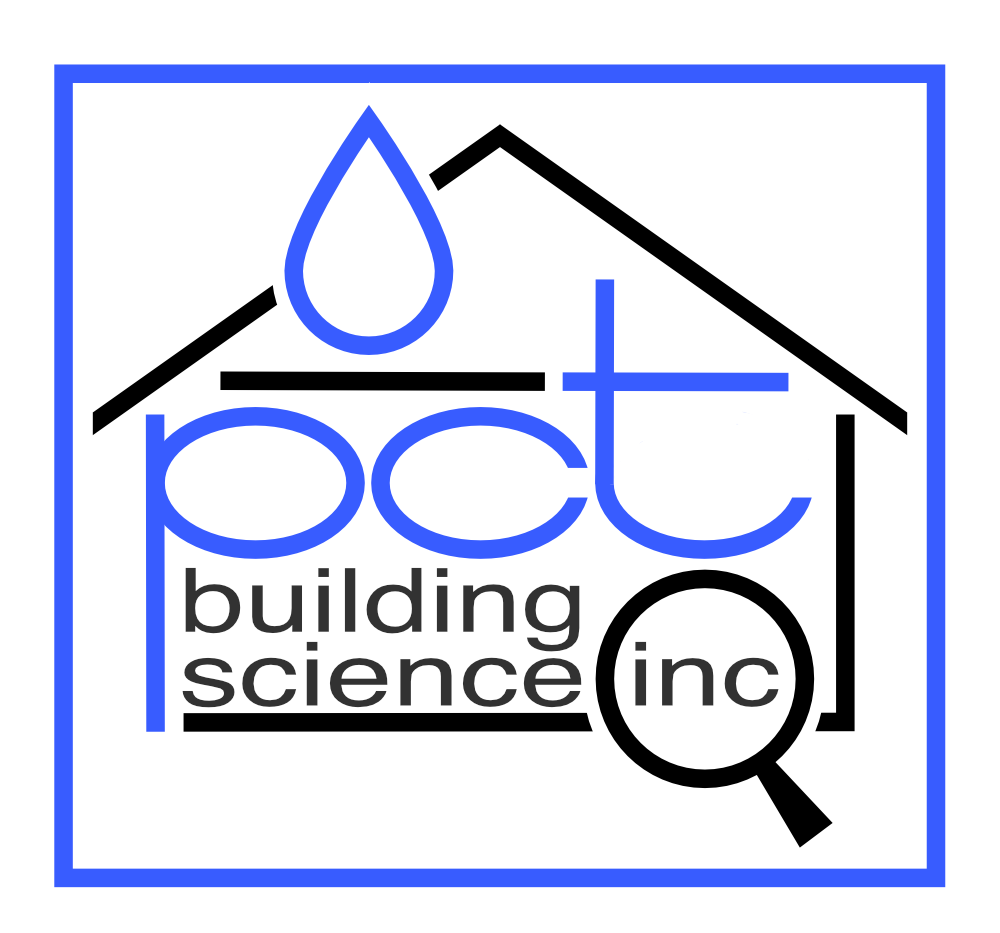

Dr. P. Christopher Timusk is a specialist in the areas of Building Science and
Wood Composite Materials, with particular expertise in the areas of moisture
physics and the durability of building materials, involved as an educator,
consultant and researcher.
He has been a faculty member, past Industrial Research Chair in Mass Timber
Construction, and researcher in the Center for Construction and Engineering
Technologies at George Brown College where he taught courses in Building
Science and Material Science, and was Principal Investigator of the Argile
$3 million MRI funded research project on the exterior retrofit of solid masonry
walls. Christopher also taught for 11 years at the University of Toronto, Faculty of Applied Science and Engineering, in the Certificate program in Building Science.
He has been also principal investigator on numerous Building Science
related projects involving industry partners including Roxul, Owens Corning,
Dow, DuPont, CertainTeed, Empire Homes, Doug Tarry Homes and others.
The primary focus of Christopher is as a consultant in Building Science and the Owner/Director of
PCT Building Science Inc.
He has worked on numerous cases involving forensic
investigations of building failures, hygrothermal computer modeling of building
envelopes, the performance evaluations of new designs and retrofits, and working for companies including the
Canadian Wood Council, exp., buildABILITY Inc. and Brookfield Homes.
Christopher also taught for 11 years at the University of Toronto, Faculty of
Applied Science and Engineering, in the Certificate program in Building Science.